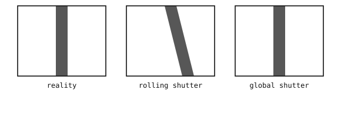

4.6. Rolling ve global enstantane¶
Sensör, iki boyutlu piksel ızgarasını her seferinde bir hücre olacak şekilde okur. Bu okuma sürecinin iki yönü, kaydedilen görüntüyü biçimlendirir: piksellerin taranma sırası ve her satırın pozlama penceresinin bu taramayla zaman içinde nasıl hizalandığı. Birincisi silikon tarafından sabitlenir; ikincisi ise hareket eden sahneler için büyük önem taşıyan iki yerleşik biçimde gelir.
4.6.1. Okuma sırası¶
Tipik sensörler sol alt pikselden başlar ve o satır boyunca sağa doğru tarar, ardından bir üst satıra geçip yine sağa doğru tarar ve bu, sağ üstte bitene kadar böyle devam eder.

Piksel dizisi, sol alt pikselden başlanarak okunur; her satır boyunca sağa doğru taranır ve satırlar arasında bir üst satıra ilerlenir.¶
Bu sıra tesadüf değildir. Lens, sahneyi sensöre yansıtırken yatay olarak aynalar ve dikey olarak ters çevirir – sahnenin üstü sensörün altına, sahnenin solu sensörün sağına düşer – ve sol-alttan-sonra-yukarı okuma, sensörü her iki çevirmeyi de geri alan sırada dolaşarak pikselleri belleğe düz yönde yerleştirir.
4.6.2. Rolling enstantane¶
Rolling-shutter (kayan perde) bir sensörde, her satır sırayla pozlanır ve okunur. Bir satır okunurken bir sonraki satır hâlâ pozlamasını tamamlamaktadır, ondan sonraki satır ise yeni başlamıştır ve bu böyle devam eder – her satırın pozlama penceresi, bir sonrakine göre zaman içinde biraz kaydırılmıştır. Sensörün entegrasyon penceresi tarama sırasında çerçeve boyunca kayar ve tam bir tarama, tam çerçeve süresini alır.
Sabit sahneler için bu görünmezdir. Hızlı hareket içeren sahnelerde ise bu kayma bir eğrilme (skew) olarak ortaya çıkar – ilk satırın yakalandığı an ile son satırın yakalandığı an arasında hareket eden bir nesne, aynı çerçevenin farklı satırlarında farklı konumlarda görünür.

Her enstantane türü tarafından yakalanmış, sağa doğru hareket eden dikey bir çubuk. Rolling shutter çubuğu eğer, çünkü çerçevenin üstü alttan farklı bir zamanda okunur; global shutter ise çubuğu tek bir anda dondurur.¶
Rolling shutter daha ucuz bir tasarımdır. Her satır, pozlamasını bitirir bitirmez hemen okunduğundan, piksel devresinin değerini sensör genelinde bir okuma boyunca tutacak piksel başına korumalı bir depolamaya ihtiyacı yoktur. Tasarruf edilen transistörler, fotodiyota pikselin daha büyük bir bölümünü bırakır ve bu da aynı fiziksel piksel boyutunda doğrudan daha yüksek duyarlılık ve daha düşük gürültü anlamına gelir. Çoğu tüketici görüntü sensörü bu nedenle rolling-shutter’dır.
4.6.3. Global enstantane¶
Global-shutter (küresel perde) bir sensörde, her piksel pozlamasına aynı anda başlar ve aynı anda bitirir. Yakalanan yük daha sonra pikselin üzerindeki korumalı bir depolama alanına aktarılır ve satır satır okuma buradan gerçekleştirilir. Yakalanan çerçeve, sahne ne kadar hızlı hareket ederse etsin, zaman içinde tek bir anı temsil eder.
Global shutter daha fazla silikona mal olur ve bu maliyet fotodiyota düşer. Her satırın değerini sensör genelinde bir okuma boyunca tutmak, her piksel üzerinde fazladan korumalı bir depolama hücresi ve onu fotodiyottan ayıran transistörler gerektirir – aksi takdirde fotodiyotun kendisine ait olacak bir alan. Daha küçük bir fotodiyot, birim zamanda daha az foton yakalar, dolayısıyla bir global-shutter pikseli, eşdeğer boyuttaki bir rolling-shutter pikselinden daha az duyarlıdır. Aynı sahneyi aynı parlaklıkta kaydetmek için daha uzun bir pozlama ya da daha yüksek kazanç gerekir ve fazladan devre, bunun üstüne okuma gürültüsünü de biraz artırır.
Diğer vergi ise pozlama bütçesindedir. Rolling-shutter bir sensörde her satırın pozlaması komşu satırların okumasıyla örtüşür, dolayısıyla her satır neredeyse tam çerçeve süresi boyunca ışık entegre edebilir. Global shutter’da ise okuma, her satır pozlamasını bitirene kadar başlayamaz, dolayısıyla belirli bir kare hızında maksimum pozlama süresi, çerçeve süresinden tam okuma süresinin çıkarılmasıyla bulunan değerdir. Aynı kare hızında, rolling-shutter pikseli çerçeve başına daha fazla ışık elde eder.
Bu maliyetler birbirine eklenir: global-shutter sensörler, rolling-shutter muadillerine göre daha az piksel sayısına sahip, daha gürültülü, daha az duyarlı ve piksel başına daha pahalıdır. Bu takas yalnızca hızlı hareketin temiz bir şekilde yakalanması gerektiğinde değerlidir.
4.6.4. Hangisi ne zaman kullanılır¶
Enstantane türü, sensörün bir yazılım ayarı değil, donanım özelliğidir. Bu seçim, kamera tasarlanırken yapılır.
Rolling shutter şu durumlarda uygundur:
sahne sabit olduğunda ya da yavaş hareket ettiğinde;
uygulama bir miktar eğrilmeyi tolere edebildiğinde (çoğu fotoğrafçılık ve çoğu kullanıcı arayüzü çalışması);
maliyet ve dolar başına çözünürlük öncelikli olduğunda.
Global shutter şu durumlarda doğru seçimdir:
sahne, temiz bir şekilde yakalanması gereken hızlı hareket içerdiğinde (robotik, dronlar, konveyör bant denetimi);
kameranın kendisi statik bir sahneye göre titreşiyor ya da hareket ediyor olduğunda;
görüntü, her çerçevenin tek bir zaman anı olduğunu varsayan bir görüş algoritmasına beslendiğinde (çoğu poz tahmini ve hareketten yapı çıkarma işlem hattı).
Not
OpenMV Cam serisi, makine görüşü kullanımı için varsayılan olarak global-shutter sensörler kullanır; burada hareket eden bir özne (ya da hareket eden bir kamera) üzerindeki hareket bulanıklığı, sonraki tespit ve takip aşamalarını bozar. Yavaş ya da statik bir sahnenin görüntü kalitesinin, hızlı hareketi dondurmaktan daha önemli olduğu uygulamalar için rolling-shutter sensör modülleri de sunulur – klasik fotoğrafçılık tarzı yakalama.